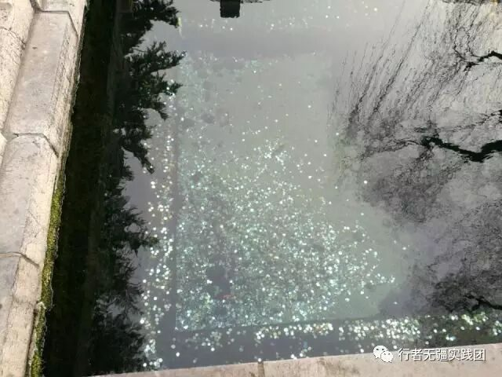
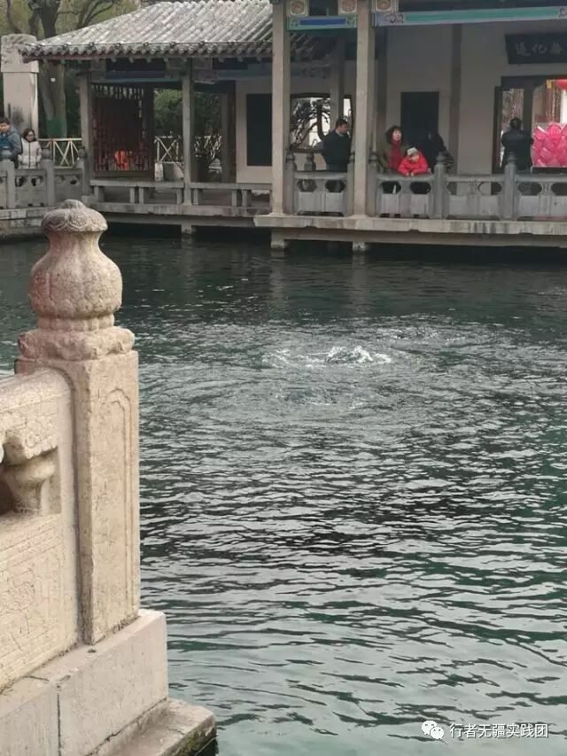
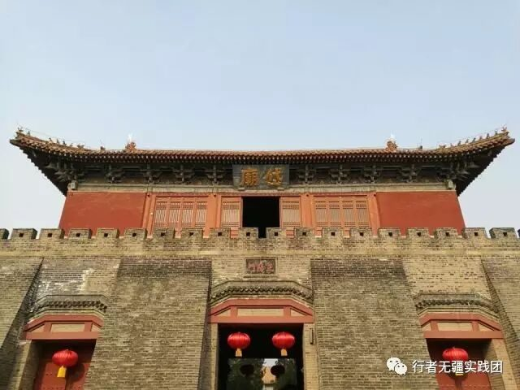
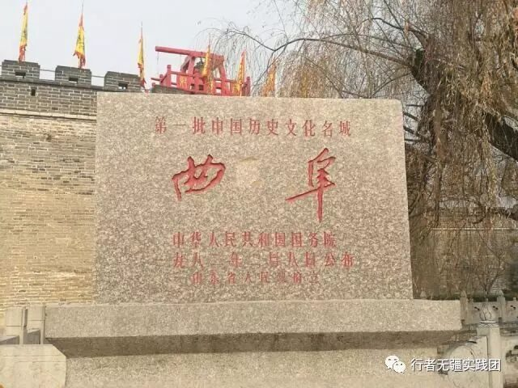
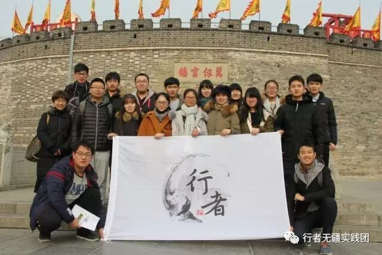

来自行者的第五封信|体悟齐鲁文化
体悟齐鲁文化
文：蒋蕴涵
齐鲁文化，深邃而博广。
说来惭愧，作为一个山东人，在实践前，我未曾真正体味过齐鲁文化之博大精深所在。此次实践，我们踏寻着历史的风韵赏游了喷腾不息的趵突泉，庄严而雄伟的岱庙，古朴而韵味十足的“三孔”，可谓收获颇丰。
初到济南，天朗气清，听在济南工作的姐姐说，是为数不多的大晴天。
“泉城”济南以泉景著称，这泉最富盛名的莫过于趵突泉了。行至趵突泉眼，只见清澈见底的一池靛水中三股泉水汩汩而涌，确是很美，然而听闻近年来趵突泉水势愈渐弱小，泉眼已远不及当年盛况，令人惋惜。
对于趵突泉，使我印象最深的并非泉之美，而是满池的硬币。国人心中默认了掷币祈福的传统，这本没什么，然而白白污染了泉水，令人痛心。犹记得，胡须花白的老人家控诉着年轻人不懂得保护泉水时的气愤；犹记得，清洁工人向我们述说池底异物难以清洁时的无奈。
保护文化古迹的重任已落在我们身上，对于文化的保护与传承不应仅限于嘴上说说，更应付诸实践。


当然，济南除了泉景外，湖光与山色亦是极美，“四面荷花三面柳，一城山色半城湖”这湖指的是济南市中心的大明湖，这山指的则是风景秀美的千佛山。
泉景、湖光、山色，加上地道的鲁菜和悠久的齐鲁文化，济南在全国省会城市中算是极具代表性的一座。
而后，我们来到了泰安，虽未能登上“五岳独尊”的泰山感受一览众山小，但古代艺术的博物馆——岱庙亦是给了我深深地震撼。
庄严而雄伟的岱庙，殿宇辉煌，文物荟萃，庙中巍峨的殿宇与高入云端的南天门遥相呼应，每一处建筑都体现着我国古代建筑艺术的风采，每一件文物都反映了泰山的文明发展。还有那虬龙蟠旋的古柏，玲珑精美的盆景，无不彰显着其古朴与典雅。

此次泰安之行，我们领略了岱庙之庄严，亦体会了泰安人的朴实。曾当过泥瓦匠的老爷爷，没读过几年书，当我们问及泰安变迁时，确是侃侃而谈，还将自己编的顺口溜分享给我们；卖煎饼的大叔，将零钱盒放在桌上，付款和找零全凭自觉；买煎饼的市民自觉排队，实事求是付款。人与人之间最简单的信任得以体现，而这信任在这个物欲横流的时代显得弥足珍贵，这亦是一种文化，值得我们反思与传承。
最后一站，我们来到了孔孟之乡——曲阜。
曲阜与我印象中的现代城市迥然不同，青瓦灰墙、古香古色的老式建筑与中规中矩的新式建筑有机结合，没有多数城市的喧嚣与浮躁，有的尽是幽远与典雅。漫步于曲阜的大街小巷，感受着厚重的历史文化，品味着东方圣城的古韵，耳边不时传来嗒嗒的马蹄声，将我的思绪带回两千五百多年前，仿佛看到孔子乘坐着牛车周游列国，传播其政治主张却不得重用，十四年间辗转呼告，黯然神伤，一生孜孜不倦，上下求索。而今圣人已驾鹤西去，其“仁”的思想精髓传承于世，成为无数人的追求与寄托。


来到曲阜，“三孔”盛景自不可错过，不过在此，我更想谈谈对于“三孔”这一世界文化遗产的保护问题，游览“三孔”，除了其盛景外，映入眼帘的是古迹损毁。
抗日战争都未曾遭到破坏的“三孔”在文化大革命时遭到严重破坏，孔子像、神龛、匾联、供桌等皆被砸烂，部分石碑被推倒折断，虽然政府进行了维修，但仍造成了不可挽回的文物损失。还有随处可见的“签名”，令人看了感到十分可笑，同时又为古迹感到惋惜，这些行为都是对于文化古迹的亵渎，应该令行禁止。
已造成的破坏我们无法弥补，但我们可以加强对文化遗产的保护与宣传，使其不再遭受破坏。当然，值得欣慰的是，我们在游览“三孔”的过程中碰到了教师带领学生也来参观，这说明很多人已意识到文化传承的重要性。
虽然实践结束了，但是我们对于文化的探索与传承不该止于此。此次实践是我感受到了齐鲁文化的深邃，也体会到了对文化保护的重要性和紧迫性，我们不能让文化古迹在我们手中消逝，而应尽力保护，将其传承下去，也使子孙后代感受到中华五千年来积淀的文化底蕴，同时将其发扬光大。